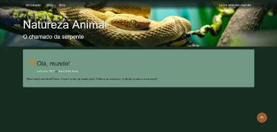
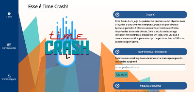
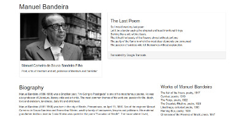

Software Developer
I'm a junior programmer, who likes to learn new technologies and does it fast. I'm interested in working with a professional team in a real project. I have high esteem to the organization of my code. I look for building experience in the IT area to become a good professional.
Natureza Animal
WordPress theme I made for my mom's blog (the auto-playing sound on page load was her wish).
Tecnolgias
- PHP 7
- WordPress
- CSS
- JavaScript
- JQuery
- HTML5
Time Crash
Site of my end-of-course project: a game. Fully developed by me, but the art is by a colleague.
Tecnolgias
- Firebase
- HTML5
- Sass
- JavaScript
- JQuery
- Slick Slider
Tribute Page: Manuel Bandeira
Tribute page to Manuel Bandeira, a Brazilian author, as a Free Code Camp task.
Tecnolgias
- HTML5
- Bootstrap
- JavaScript